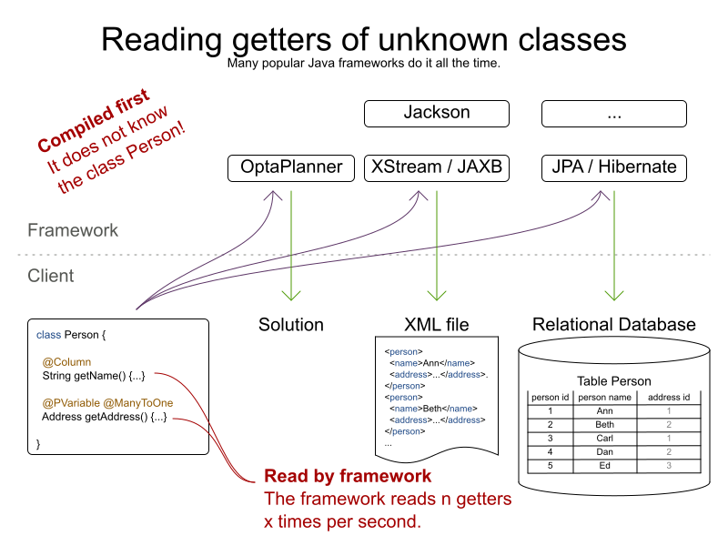

Java Reflection, but much faster
What is the fastest way to read a getter from a Java class without knowing the class at compilation time?
Java frameworks often do this. A lot. And it can directly influence their performance.
So let’s benchmark different approaches, such as reflection, method handles and code generation.
Java frameworks often do this. A lot. And it can directly influence their performance.
So let’s benchmark different approaches, such as reflection, method handles and code generation.
The use case
Presume we have a simple
Person class with a name and an address:public class Person {
...
public String getName() {...}
public Address getAddress() {...}
} and we want to use frameworks such as:
- XStream, JAXB or Jackson to serialize instances to XML or JSON.
- JPA/Hibernate to store persons in a database.
- OptaPlanner to assign addresses (in case they’re tourists or homeless).

None of these frameworks know the
Person class. So they can’t simply call person.getName(): // Framework code
public Object executeGetter(Object object) {
// Compilation error: class Person is unknown to the framework
return ((Person) object).getName();
} Instead, the code uses reflection, method handles or code generation.
But such code is called an awful lot:
- If you insert 1000 different persons in a database, JPA/Hibernate probably calls such code 2000 times:
- 1000 calls to
Person.getName() - another 1000 calls to
Person.getAddress()
- 1000 calls to
- Similarly, if you write 1000 different persons to XML or JSON, there are likely 2000 calls by XStream, JAXB or Jackson.
Obviously, when such code is called x times per second, its performance matters.
The benchmarks
Using JMH, I ran a set of micro benchmarks using OpenJDK 1.8.0_111 on Linux
on a 64-bit 8-core Intel i7-4790 desktop with 32GB RAM.
The JMH benchmark ran with 3 forks, 5 warmup iterations of 1 second and 20 measurement iterations of 1 second.
All warmup costs are gone: increasing the length of an iteration to 5 seconds has little or no impact on the numbers reported here.
on a 64-bit 8-core Intel i7-4790 desktop with 32GB RAM.
The JMH benchmark ran with 3 forks, 5 warmup iterations of 1 second and 20 measurement iterations of 1 second.
All warmup costs are gone: increasing the length of an iteration to 5 seconds has little or no impact on the numbers reported here.
The TL;DR results
- Java Reflection is slow. (*)
- Java MethodHandles are slow too. (*)
- Generated code with
javax.tools.JavaCompileris fast. (*) - LambdaMetafactory is pretty fast. (*)
(*) On the use cases I benchmarked with the workload I used. Your mileage may vary.
So the devil is in the details.
Let’s go through the implementations,
to confirm I applied typical magical tricks (such as
Let’s go through the implementations,
to confirm I applied typical magical tricks (such as
setAccessible(true)).Implementations
Direct access (baseline)
I’ve used a normal
person.getName() call as the baseline:public final class MyAccessor {
public Object executeGetter(Object object) {
return ((Person) object).getName();
}
} This takes about 2.6 nanoseconds per operation:
Benchmark Mode Cnt Score Error Units
===================================================
DirectAccess avgt 60 2.590 ± 0.014 ns/op Direct access is naturally the fastest approach at runtime, with no bootstrap cost.
But it imports
But it imports
Person at compilation time, so it’s unusable by every framework.Reflection
The obvious way for a framework read that getter at runtime, without knowing it in advance,
is through Java Reflection:
is through Java Reflection:
public final class MyAccessor {
private final Method getterMethod;
public MyAccessor() {
getterMethod = Person.class.getMethod("getName");
// Skip Java language access checking during executeGetter()
getterMethod.setAccessible(true);
}
public Object executeGetter(Object bean) {
return getterMethod.invoke(bean);
}
} Adding
but even then it takes 5.5 nanoseconds per call.
setAccessible(true) call makes these reflection calls faster,but even then it takes 5.5 nanoseconds per call.
Benchmark Mode Cnt Score Error Units
===================================================
DirectAccess avgt 60 2.590 ± 0.014 ns/op
Reflection avgt 60 5.275 ± 0.053 ns/op Reflection is 104% slower than direct access (so about twice as slow).
It also takes longer to warm up.
It also takes longer to warm up.
This wasn’t a big surprise to me,
because when I profile (using sampling) an artificially simple
Traveling Salesman Problem
with 980 cities in OptaPlanner,
the reflection cost sticks out like a sore thumb:
because when I profile (using sampling) an artificially simple
Traveling Salesman Problem
with 980 cities in OptaPlanner,
the reflection cost sticks out like a sore thumb:
MethodHandles
MethodHandle was introduced in java 7 to support invokedynamic instructions.
According to the javadoc, it’s a typed, directly executable reference to an underlying method.
Sounds fast, right?
According to the javadoc, it’s a typed, directly executable reference to an underlying method.
Sounds fast, right?
public final class MyAccessor {
private final MethodHandle getterMethodHandle;
public MyAccessor() {
MethodHandles.Lookup lookup = MethodHandles.lookup();
// findVirtual() matches signature of Person.getName()
getterMethodHandle = lookup.findVirtual(Person.class, "getName", MethodType.methodType(String.class))
// asType() matches signature of MyAccessor.executeGetter()
.asType(MethodType.methodType(Object.class, Object.class));
}
public Object executeGetter(Object bean) {
return getterMethodHandle.invokeExact(bean);
}
} Well unfortunately, MethodHandle is even slower than reflection in OpenJDK 8.
It takes 6.1 nanoseconds per operation, so 136% slower than direct access.
It takes 6.1 nanoseconds per operation, so 136% slower than direct access.
Benchmark Mode Cnt Score Error Units
===================================================
DirectAccess avgt 60 2.590 ± 0.014 ns/op
Reflection avgt 60 5.275 ± 0.053 ns/op
MethodHandle avgt 60 6.100 ± 0.079 ns/op Using
I do hope that MethodHandle will become as fast as direct access in future Java versions.
lookup.unreflectGetter(Field) instead of lookup.findVirtual(…) has no notable difference.I do hope that MethodHandle will become as fast as direct access in future Java versions.
Static MethodHandles (update on 2018-01-11)
I also ran a benchmark with MethodHandle in a static field.
The JVM can do more magic with static fields, as explained by Aleksey Shipilёv.
Aleksey and John O’Hara correctly pointed out that the original benchmark didn’t use static fields correctly,
so I fixed that. Here are the amended results:
The JVM can do more magic with static fields, as explained by Aleksey Shipilёv.
Aleksey and John O’Hara correctly pointed out that the original benchmark didn’t use static fields correctly,
so I fixed that. Here are the amended results:
Benchmark Mode Cnt Score Error Units
===================================================
DirectAccess avgt 60 2.590 ± 0.014 ns/op
MethodHandle avgt 60 6.100 ± 0.079 ns/op
StaticMethodHandle avgt 60 2.635 ± 0.027 ns/op Yes, a static MethodHandle is as fast as direct access, but it’s still useless, unless we want to write code like this:
public final class MyAccessors {
private static final MethodHandle handle1; // Person.getName()
private static final MethodHandle handle2; // Person.getAge()
private static final MethodHandle handle3; // Company.getName()
private static final MethodHandle handle4; // Company.getAddress()
private static final MethodHandle handle5; // ...
private static final MethodHandle handle6;
private static final MethodHandle handle7;
private static final MethodHandle handle8;
private static final MethodHandle handle9;
...
private static final MethodHandle handle1000;
} If our framework deals with a domain class hierarchy with 4 getters, it would fill up the first 4 fields.
However, if it deals with 100 domain classes with 20 getters each, totaling 2000 getters,
it will crash due to a lack of static fields.
However, if it deals with 100 domain classes with 20 getters each, totaling 2000 getters,
it will crash due to a lack of static fields.
Besides, if I wrote code like this, even first year students would come tell me that I am doing it wrong.
Static fields shouldn’t be used for instance variables.
Static fields shouldn’t be used for instance variables.
Generated code with javax.tools.JavaCompiler
In Java, it’s possible to compile and run generated Java code at runtime.
So with the
So with the
javax.tools.JavaCompiler API, we can generate the direct access code at runtime:public abstract class MyAccessor {
// Just a gist of the code, the full source code is linked in a previous section
public static MyAccessor generate() {
final String String fullClassName = "x.y.generated.MyAccessorPerson$getName";
final String source = "package x.y.generated;n"
+ "public final class MyAccessorPerson$getName extends MyAccessor {n"
+ " public Object executeGetter(Object bean) {n"
+ " return ((Person) object).getName();n"
+ " }n"
+ "}";
JavaFileObject fileObject = new ...(fullClassName, source);
JavaCompiler compiler = ToolProvider.getSystemJavaCompiler();
ClassLoader classLoader = ...;
JavaFileManager javaFileManager = new ...(..., classLoader)
CompilationTask task = compiler.getTask(..., javaFileManager, ..., singletonList(fileObject));
boolean success = task.call();
...
Class compiledClass = classLoader.loadClass(fullClassName);
return compiledClass.newInstance();
}
// Implemented by the generated subclass
public abstract Object executeGetter(Object object);
} The full source code is much longer and available in this GitHub repository.
For more information on how to use
take a look at page 2 of this article
or this article.
In Java 8, it requires the
In Java 9, it requires the module
Also, proper care needs to be taken that it doesn’t generate a
and that it uses the correct
For more information on how to use
javax.tools.JavaCompiler,take a look at page 2 of this article
or this article.
In Java 8, it requires the
tools.jar on the classpath, which is there automatically in a JDK installation.In Java 9, it requires the module
java.compiler in the modulepath.Also, proper care needs to be taken that it doesn’t generate a
classlist.mf file in the working directoryand that it uses the correct
ClassLoader. Besides
but those infer maven dependencies and might have different performance results.
javax.tools.JavaCompiler, similar approaches can use ASM or CGLIB,but those infer maven dependencies and might have different performance results.
In any case, the generated code is as fast as direct access:
Benchmark Mode Cnt Score Error Units
===================================================
DirectAccess avgt 60 2.590 ± 0.014 ns/op
JavaCompiler avgt 60 2.726 ± 0.026 ns/op So when I ran that
Traveling Salesman Problem
again in OptaPlanner,
this time using code generation to access planning variables, the score calculation speed was 18% faster overall.
And the profiling (using sampling) looks much better too:
Traveling Salesman Problem
again in OptaPlanner,
this time using code generation to access planning variables, the score calculation speed was 18% faster overall.
And the profiling (using sampling) looks much better too:
Note that in normal use cases, that performance gain will hardly be detectable,
due to massive CPU needs of a realistically complex score calculation…
due to massive CPU needs of a realistically complex score calculation…
One downside of code generation at runtime is that it infers a noticeable bootstrap cost (as discussed later),
especially if the generated code isn’t compiled in bulk.
So I am still hoping that some day MethodHandles will get as fast as direct access,
just to avoid that bootstrap cost and the dependency pain.
especially if the generated code isn’t compiled in bulk.
So I am still hoping that some day MethodHandles will get as fast as direct access,
just to avoid that bootstrap cost and the dependency pain.
LambdaMetafactory (update on 2018-01-11)
On Reddit, I received an eloquent suggestion to use
LambdaMetafactory:
Getting
(due to lack of documentation and StackOverflow questions), but it does work:
LambdaMetafactory to work on a non-static method turned out to be challenging(due to lack of documentation and StackOverflow questions), but it does work:
public final class MyAccessor {
private final Function getterFunction;
public MyAccessor() {
MethodHandles.Lookup lookup = MethodHandles.lookup();
CallSite site = LambdaMetafactory.metafactory(lookup,
"apply",
MethodType.methodType(Function.class),
MethodType.methodType(Object.class, Object.class),
lookup.findVirtual(Person.class, "getName", MethodType.methodType(String.class)),
MethodType.methodType(String.class, Person.class));
getterFunction = (Function) site.getTarget().invokeExact();
}
public Object executeGetter(Object bean) {
return getterFunction.apply(bean);
}
} And it looks good: LambdaMetafactory is almost as fast as direct access.
It’s only 33% slower than direct access, so much better than reflection.
It’s only 33% slower than direct access, so much better than reflection.
Benchmark Mode Cnt Score Error Units
===================================================
DirectAccess avgt 60 2.590 ± 0.014 ns/op
Reflection avgt 60 5.275 ± 0.053 ns/op
LambdaMetafactory avgt 60 3.453 ± 0.034 ns/op When I ran that
Traveling Salesman Problem
again in OptaPlanner,
this time using LambdaMetafactory to access planning variables, the score calculation speed was 9% faster overall.
However, the profiling (using sampling) still shows a lot of
Traveling Salesman Problem
again in OptaPlanner,
this time using LambdaMetafactory to access planning variables, the score calculation speed was 9% faster overall.
However, the profiling (using sampling) still shows a lot of
executeGetter() time, but less than with reflection. The metaspace cost seems to be about 2kb per lambda in a non-scientific measurement
and it gets garbage collected normally.
and it gets garbage collected normally.
Bootstrap cost (update on 2018-01-25)
The runtime cost matters most, as it’s not uncommon to retrieve a getter on thousands of instances per second.
However, the bootstrap cost matters too,
because we need to create a
such as
However, the bootstrap cost matters too,
because we need to create a
MyAccessor for every getter in the domain hierarchy that we want to reflect over,such as
Person.getName(), Person.getAddress(), Address.getStreet(), Address.getCity(), … Reflection and MethodHandle have a neglectable bootstrap cost.
For LambdaMetafactory it is still acceptable: my machine creates about 25k accessors per second.
But for JavaCompiler it is not: my machine creates only about 200 accessors per second.
For LambdaMetafactory it is still acceptable: my machine creates about 25k accessors per second.
But for JavaCompiler it is not: my machine creates only about 200 accessors per second.
Benchmark Mode Cnt Score Error Units
=======================================================================
Reflection Bootstrap avgt 60 268.510 ± 25.271 ns/op // 0.3µs/op
MethodHandle Bootstrap avgt 60 1519.177 ± 46.644 ns/op // 1.5µs/op
JavaCompiler Bootstrap avgt 60 4814526.314 ± 503770.574 ns/op // 4814.5µs/op
LambdaMetafactory Bootstrap avgt 60 38904.287 ± 1330.080 ns/op // 39.9µs/op This benchmark does not do caching or bulk complication.
Conclusion
In this investigation, reflection and (usable) MethodHandles are twice as slow as direct access in OpenJDK 8.
Generated code is as fast as direct access, but it’s a pain.
LambdaMetafactory is almost as fast as direct access.
Generated code is as fast as direct access, but it’s a pain.
LambdaMetafactory is almost as fast as direct access.
Benchmark Mode Cnt Score Error Units
===================================================
DirectAccess avgt 60 2.590 ± 0.014 ns/op
Reflection avgt 60 5.275 ± 0.053 ns/op // 104% slower
MethodHandle avgt 60 6.100 ± 0.079 ns/op // 136% slower
StaticMethodHandle avgt 60 2.635 ± 0.027 ns/op // 2% slower
JavaCompiler avgt 60 2.726 ± 0.026 ns/op // 5% slower
LambdaMetafactory avgt 60 3.453 ± 0.034 ns/op // 33% slower Your mileage may vary.
Author

{kind=link}
{kind=link}
This post was original published on here.